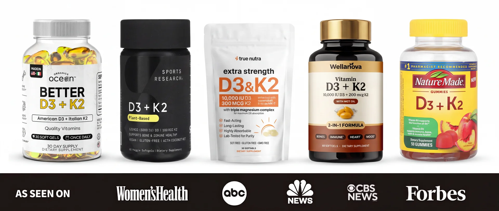
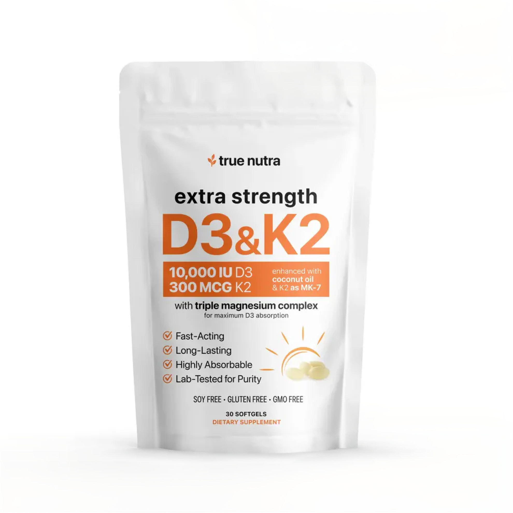
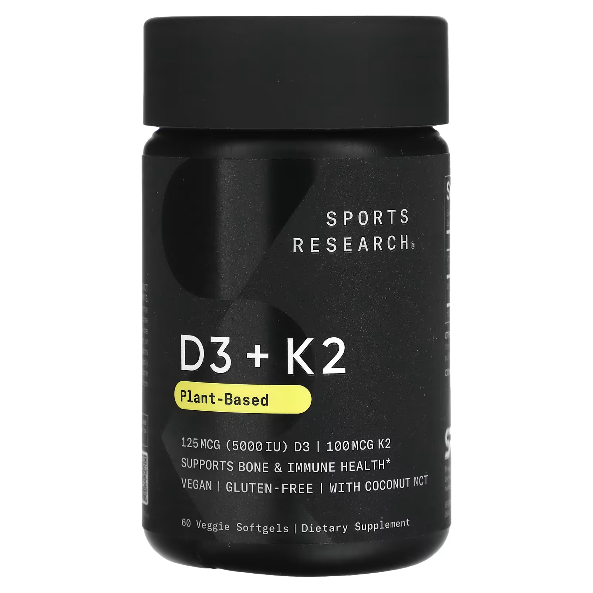
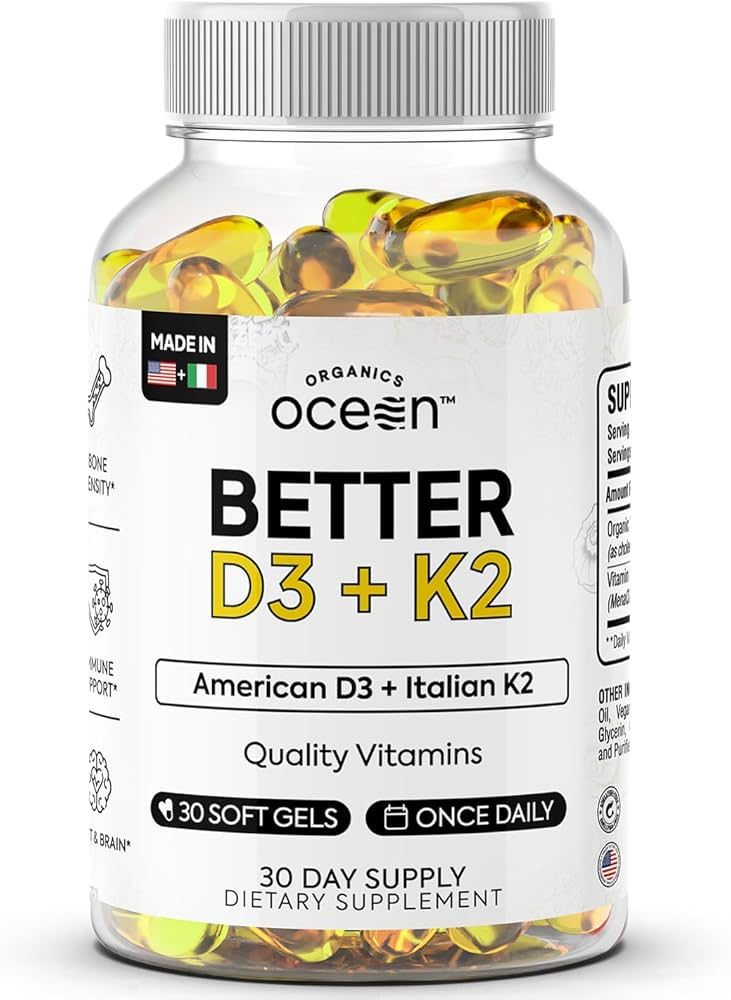
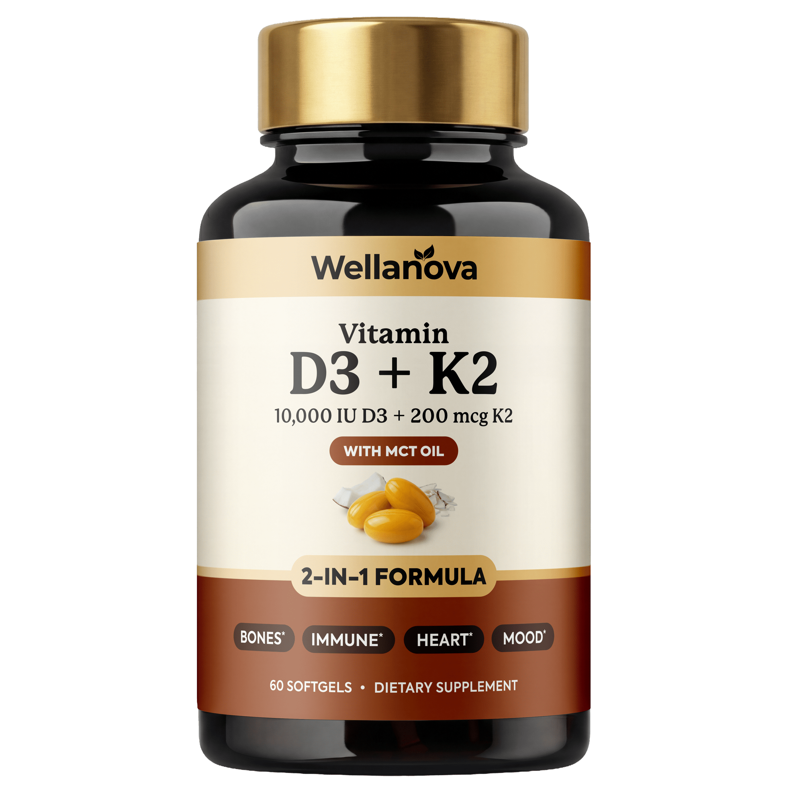
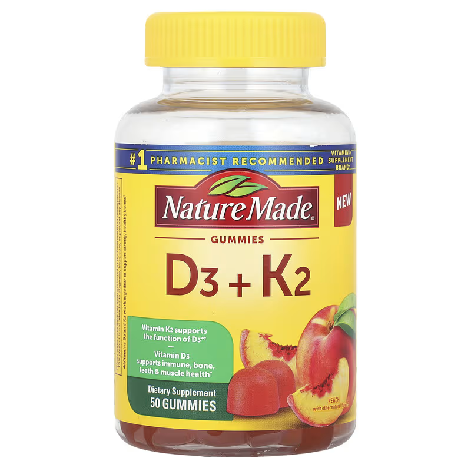
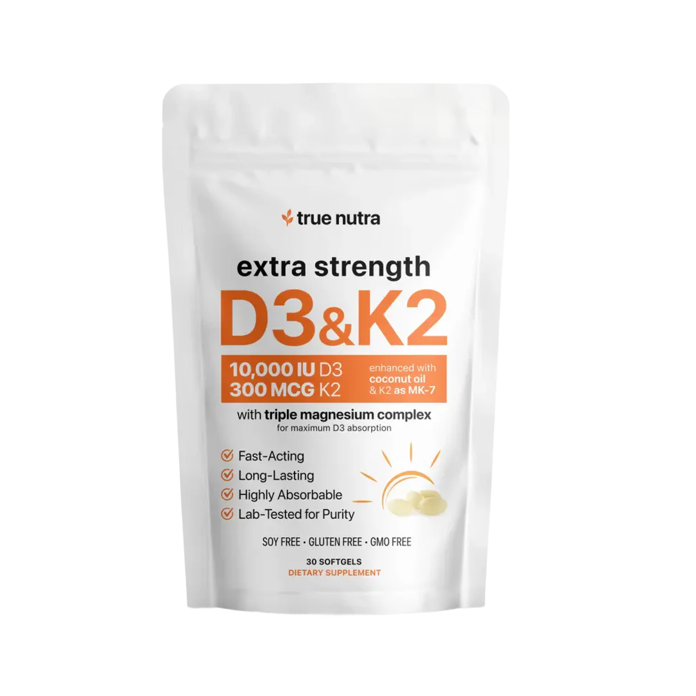

The Top 5 Vitamin D3 + K2 Supplements of 2025 - Ranked, Tested, And The One That Outperformed Every Other Formula We Tried
Vitamin D3 + K2 supplements are everywhere right now, but most of them are missing the ingredients that make the vitamins actually absorb into your body. We compared formulas, doses, delivery, and real results so you don't waste another month on a bottle that's quietly doing nothing.

Over the past year, Vitamin D3 + K2 has become one of the most-searched supplements in the country, and for good reason. Low Vitamin D affects nearly half of American adults, and the symptoms hit just about every part of your day: weak bones, achy joints, low energy, weak immunity, poor sleep, low mood, stubborn weight, and inflammation that won't quit. The right formula can flip all of that and finally get your levels, your energy, and your bones back where they should be.
But with so many D3 + K2 products out there - softgels, capsules, gummies, drops - which ones actually work? That's exactly what we set out to find out.
Our team reviewed dozens of D3 + K2 supplements and narrowed the list down to the five most popular options people are buying right now. Then we put them to the test.
Here's what we found...
How We Ranked These Supplements
We scored each product on six key things:
-
Ingredient Stack
Does the formula have everything you actually need (D3, K2, magnesium, and a healthy fat to carry it in), or does it stop halfway? -
Real-World Effectiveness
Does it actually move your numbers and how you feel? -
D3 Strength
Is the dose big enough to fix a real deficiency, or is it the watered-down drugstore amount that doesn't move the needle? -
How Well It Absorbs
Does the format actually get the vitamins into your bloodstream, or does most of it pass through without doing anything? -
Transparency & Quality
Are doses fully disclosed? Clean ingredients? Any fillers or junk? - Real User Results: Are users actually feeling stronger bones, better energy, better mood, and seeing it show up in their bloodwork?
Our Top 5 Vitamin D3 + K2 Supplements
#1 - True Nutra Extra Strength Vitamin D3 & K2
(Best Overall · Best for Fixing Low Vitamin D, Stronger Bones & Steady Energy)
Overall Grade A+

From the very first week of testing, True Nutra's Extra Strength D3 & K2 hit harder than anything else we tried, with users reporting deeper sleep within days, steadier mood and better morning energy by week two, less joint stiffness, stronger immunity, and bloodwork showing their Vitamin D levels finally in the healthy range by the 30-day mark. Multiple testers said it was the first D3 supplement that actually showed up on a lab test.
The reason it works so well is the full stack of ingredients - the only formula on this list that combines a strong 10,000 IU dose of D3 with the premium MK-7 form of K2, plus a Triple Magnesium Complex (the piece nearly every other brand skips) that's needed for the D3 to actually do its job inside your body. And all of it sits in a coconut oil base, which is what helps the vitamins absorb up to 5x better than the dry capsules most competitors use.
Special Offer: Buy 1 Get 1 FREE + Free Shipping for Our Readers (Limited Supply)
Visit the SiteWhy It's #1
Deeper sleep and better morning energy within the first week
Stronger bones, less joint stiffness, and better immunity by week two
Vitamin D levels back in the healthy range at your next bloodwork
One easy softgel a day - and it absorbs up to 5x better than dry capsules
90-Day Money-Back Guarantee - three times the industry standard. Zero risk.
PROS
- Strong enough to actually fix low Vitamin D
- Deeper sleep, better mood, more morning energy
- Stronger bones and less joint stiffness
- Absorbs up to 5x better than dry capsules
- Includes magnesium - what most brands skip
- Premium MK-7 form of K2 (lasts in your body 3 days, not 1 hour)
- 90-day money-back guarantee
CONS
- Only available through the official website
- Frequently sells out due to high demand
Our Experience: Testers felt deeper sleep and better morning energy within the first week. By week two, less joint stiffness and stronger immunity. By the 30-day bloodwork check, multiple testers saw their Vitamin D levels back in the healthy range for the first time in years.
Bottom Line: If you want a D3 + K2 supplement that actually moves your bloodwork and makes you feel the difference, True Nutra is the standout pick on this list.
We Reached Out to True Nutra & Locked In Buy 1 Get 1 FREE + Free Shipping For Our Readers (Likely to Sell Out Fast)
Visit the Site#2 - Sports Research Vitamin D3 + K2
Overall Grade B+


Sports Research is one of the more legitimate D3 + K2 brands out there, with a decent 5,000 IU dose of D3, the premium MK-7 form of K2, and a coconut oil base that helps the vitamins absorb properly - which already puts it ahead of most of the field.
But the formula stops there, with no magnesium included, and that's the piece your body actually needs to put the D3 to work. Without it, you're absorbing the vitamin but only getting part of the benefit, and daily use slowly drains the magnesium your body already had.
PROS
- Coconut oil base for good absorption
- Uses the premium MK-7 form of K2
- Established brand with clean labeling
CONS
- No magnesium - the piece your body needs to use the D3
- Lower dose (5,000 IU vs. True Nutra's 10,000 IU)
- Daily users slowly drain their magnesium without realizing it
- 30-day guarantee vs. True Nutra's 90 days
Verdict: Sports Research gets the absorption part right, but stops short of the full formula. Closer to True Nutra than the rest of the list, but still missing the magnesium piece that completes it.
#3 - Better D3 + K2 by Organics Ocean
Overall Grade B


Organics Ocean's Better D3 + K2 has nice clean-label branding and the basic D3 + K2 pairing is right - it's the kind of bottle that looks great on a wellness shelf. But "better" stops at the basics, with no magnesium to help the D3 actually work in your body, and no coconut oil base, which means the vitamins don't absorb the way they need to.
The D3 dose is also on the lower side, which is fine for keeping levels steady but not strong enough to fix an actual deficiency, so most users won't see a real change in their numbers.
PROS
- Clean, organic-positioned profile
- Combines D3 + K2 in a single softgel
- Reasonable price point
CONS
- No magnesium - missing the piece your body needs to use the D3
- No coconut oil - reduced absorption
- D3 dose too low to actually fix a deficiency
- K2 form not always specified
- 30-day guarantee vs. True Nutra's 90-day
Verdict: A clean-label starter, but it stops at the two basic ingredients without the supporting pieces that make the vitamins actually work. Fine for maintenance, underpowered for anyone trying to see real changes in their bloodwork.
#4 - Wellanova D3 + K2
Overall Grade C+


Wellanova hits the basic D3 + K2 checklist and the branding looks the part, so on a wellness aisle it's an easy grab. But under the hood the formula falls behind on every front that actually matters - no magnesium, no coconut oil to help with absorption, a low D3 dose that's barely above the outdated daily recommendation, and a K2 form that often isn't even spelled out (which usually means it's the cheap, short-acting kind).
The result is a product that looks like a real D3 + K2 supplement but works like a half-dose vitamin that doesn't really do anything.
PROS
- Pairs D3 + K2 in a single product
- Recognizable wellness branding
- Lower price point
CONS
- No magnesium - the piece that activates the D3
- No coconut oil or healthy fat to carry the vitamins
- Low D3 dose - won't fix a real deficiency
- K2 form not specified - likely the cheap kind
- Users report not feeling much difference
Verdict: A budget-tier D3 + K2 that skips every piece of the formula that makes the vitamins actually work. Fine for the cheapest possible maintenance, not enough for anyone serious about feeling and seeing a real change.
#5 - Nature Made D3 + K2
Overall Grade C-

Nature Made is the mass-market drugstore brand - cheap, available everywhere, and gets the basic D3 + K2 label on the shelf. For someone who just wants to check the box, it's there.
But that's also exactly the problem: the D3 dose is small, the K2 is usually the cheap short-acting kind that's gone from your body in about an hour, there's no magnesium to help the D3 actually work, and there's no coconut oil to help the vitamins absorb. It's the most common version of D3 + K2 on the market, and it's the one that produces the smallest change in how you feel or what your bloodwork says.
PROS
- Widely available on pharmacy shelves
- Recognizable mainstream brand
- Low price point per bottle
CONS
- D3 dose too small to fix a real deficiency
- K2 likely the cheap short-acting kind
- No magnesium to help the D3 work
- No coconut oil for absorption
- Users rarely see a real change
Verdict: The lowest bar in the category - cheap ingredients, low doses, no magnesium, no fat carrier. It's the check-the-box drugstore option, not the option for someone who actually wants their bloodwork to move.
Why True Nutra Took the #1 Spot
True Nutra checks every box people actually care about:
-
The Right Ingredients
The only formula on this list with the full stack: a strong 10,000 IU dose of D3, the premium MK-7 form of K2, a Triple Magnesium Complex (the piece most brands skip), and a coconut oil base. That's the full picture your body needs to actually use the vitamins. -
The Right Delivery
Sits in a coconut oil base that helps the vitamins absorb up to 5x better than the dry capsules most brands use. Just one easy softgel a day, no handful of pills. -
The Right Quality
Every headline ingredient fully disclosed on the label. No fillers, no synthetic dyes, no junk. Third-party tested for purity. -
The Right Results
Deeper sleep within days. Better mood and morning energy by week two. Stronger bones, less joint stiffness, and bloodwork moving back into the healthy range by 30 days. -
The Right Guarantee
90-day money-back, no questions asked. Three full months to see your bloodwork move and feel the difference, or your money back.
The D3 + K2 Supplement Buying Guide (So You Don't Get Burned)
Things to Look For
A Strong Enough D3 Dose
The old daily
recommendation of 600-800 IU is barely a maintenance dose for
someone who already has healthy levels. If you're actually low,
you need something stronger to move the needle. Look for 10,000
IU when you want your numbers to actually change.
The Right Form of K2
K2 comes in two forms.
The premium one (MK-7) stays in your body for about three days.
The cheap one (MK-4) is gone in an hour. If the label doesn't
proudly say "MK-7," assume it's the cheap one.
Magnesium in the Formula
This is the single
biggest thing most brands skip. Your body needs magnesium to
actually use the D3 you're taking, and daily D3 use slowly
drains your magnesium without it. A complete formula always
includes it.
A Coconut Oil or Healthy Fat Base
D3 and K2
need fat to absorb properly. Without it, most of what you took
passes through without ever reaching your bloodstream.
A Real Money-Back Guarantee
Your Vitamin D
levels take 60-90 days to fully respond. Any brand offering less
than 90 days doesn't really believe in their own formula.
Red Flags
Low D3 Dose
If it's 1,000-2,000 IU, it
won't move your numbers in any meaningful way.
No Magnesium
Without it, the D3 you absorb
can't fully do its job, and daily use slowly drains your
magnesium stores.
Dry Capsule With No Fat Carrier
Most of the
dose passes through without ever reaching your bloodstream.
Unspecified K2 Form
If the brand isn't
proudly saying "MK-7," it's hiding the cheap kind.
30-Day Guarantees
Not long enough to see
your levels move on bloodwork.
Frequently Asked Questions
How fast will I see results?
Better sleep
and morning energy within the first week. Stronger bones, less
joint stiffness, and better mood by week two. Vitamin D levels
back in the healthy range on your next 30-60 day bloodwork.
Is this safe long-term?
Yes. Every
ingredient has a long history of daily use, and the doses are
within the safe daily range research supports. The magnesium and
K2 are actually what keep high-dose D3 safe.
Do I need to take it with food?
You can, but
you don't have to. The coconut oil base is built in, so the
vitamins absorb properly either way.
What if I don't see a difference?
Send the
bottles back for a full refund within 90 days. No questions
asked.
Can men and women both take it?
Yes. Safe
and effective for any adult dealing with low Vitamin D, weak
bones, low energy, or low mood.
Are D3 + K2 Supplements Really the Best Solution?
There's no such thing as a magic pill, but a
well-formulated, properly-delivered D3 + K2 supplement is one of
the most reliable natural levers you have for fixing low Vitamin
D, supporting your bones, and getting your energy back. Sun
exposure works, but most people don't get enough of it. Food
sources are limited to fatty fish and a few fortified options in
quantities way below what most adults actually need.
Our research showed True Nutra's Extra Strength D3 & K2 came out on top. Most users feel deeper sleep and better morning energy within the first week, stronger bones and less joint stiffness by week two, and see their Vitamin D levels back in the healthy range on their next bloodwork. Take it daily, and the results stick.
Special Offer for Our Readers
After our evaluation, we reached out to True Nutra and they agreed to extend an exclusive deal for NutriHealth Forum readers:
- Buy 1 Get 1 FREE on Extra Strength Vitamin D3 + K2
- FREE Shipping on your order
- Full 90-day, no-questions-asked money-back guarantee
At this price, with a full 90 days to try it risk-free, it's the perfect time to finally get your Vitamin D, your energy, and your bones back where they should be.
CLAIM YOUR DISCOUNT NOW
Our Top Pick - True Nutra Extra Strength Vitamin D3 & K2
- The only formula with the full stack - strong D3 dose, premium K2, magnesium, and coconut oil
- Absorbs up to 5x better than the dry capsules most brands sell
- One easy softgel a day, no handful of pills
- Users report deeper sleep, better energy, stronger bones, and Vitamin D levels back in the healthy range
- 4.8/5 star rating
- 90-day money-back guarantee